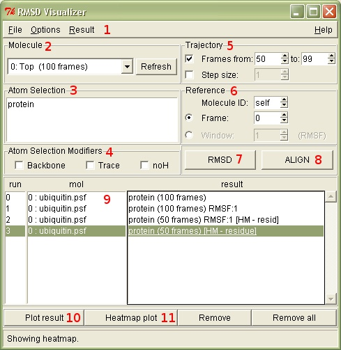

RMSD Visualizer Tool v1.0
VMD extension
:.: Description :.: Usage Instructions :.: Download and Install :.: About :.:
Description
RMSD Visualizer Tool -plugin is an extension for VMD. Its main functions include aligning molecules and calculating and visualizing RMSD (Root Mean Square Deviation) and RMSF (Root Means Square Fluctuation) data through trajectories.
Plotting the calculated RMSD 2D data is available by using a separate 'Multiplot' plugin (included with VMD).
Plotting the calculated RMSD 3D data is available by using a separate 'Heatmapper' plugin
(see Download and Install below).
Usage Instructions
Molecule: 2
All the operations are performed on the selected molecule. The refresh button can be used to update the list of available molecules, for example when molecule trajectories have changed and the list is not updated automatically.
Atom Selection: 3
The Atom Selection text box is used to specify the atoms that are used in the Align8 and RMSD7 operations. The Atom Selection text box accepts the same inputs as the VMD Graphical representations Selected Atoms text input.
Atom selection modifiers: 4
The Atom Selection Modifiers are provided as a convenience, the same effects can be achieved by using only the Atom Selection clause3. 'Backbone' selects only atoms of the protein backbone. 'Trace' selects only the alpha carbon atoms of the backbone. 'noH' leaves out all hydrogen atoms from the selection.
Trajectory: 5
The affected trajectory frames can be selected by checking the Frames and Step size checboxes in the Trajectory options. These selections affect both Align8 and RMSD7 operations.
Reference: 6
In RMSD calculations the atom positions used as the reference for the calculation are specified using the Reference Molecule ID and Frame. Using the Window selection instead of Frame moves the reference frame along with the calculation frame. For example, using a Window of 5 would use frame 1 of the reference molecule as the reference for the atom locations in selected molecules frame 6. For the first 5 frames of the calculation the reference frame will be frame 0.
Note: If frames are limited from entire range, reference frame can still be taken from outside specified limited range. For example, using RMSF (windowed) mode with a window of 8, in frame 10, the reference frame of the selected reference molecule will be 2, even if the trajectory frames were specified to be from 10-20.
Alignment: 7
Alignment is done using the atoms specified by the Atom Selection clause3 in the Atom Selection text box. Even though only the selected atoms are used in the calculations for finding the alignment, all the atoms of the selected molecule will be moved according to the new alignment. Alignment is always done through a specified trajectory using a reference molecule and its specified frame (or frame window). Selected molecule will be superimposed on the selected Reference molecule6. The alignment is done according to the VMD guidelines for computing the alignment.
Selecting 'self' as the reference 'Molecule ID' will align the molecule with itself through the specified trajectory. Selecting another molecule's ID as the reference 'Molecule ID'6 will align the molecule with the selected reference molecule and its frame, so that it will be superimposed on the reference molecule.
Note: When doing an alignment using another molecule as the reference, the selections for both molecules need to have the exact same number of atoms. It is not possible to use a separate Atom Selection clauses3 for the two molecules involved in this kind of an alignment. Caution should be especially used when the residue numberings differ between the reference molecule and the aligned (superimposed) molecule.
RMSD: 8
RMSD calculations are done for the selected molecule2, through the selected frames5, using a selected molecule and a frame6 (or a frame window) as a reference point. The results of the calculation will appear in the results list, where they can be selected and plotted in either 2D or 3D graphs (See Plotting below). The RMSD calculations are done according to the VMD guidelines.
Plotting: 9,10,11
The results list shows information about the done RMSD calculations. To plot RMSD results, select a row in the Results list. The results are stored as long as the item (row) is not removed from the list. The selected results can be plotted as 2D graphs (multiple results can be selected and plotted in one graph) using Multiplot, or as 3D heatmap graphs using the Heatmapper-plugin.
Using the heatmap plot function, further RMSD calculations are done based on the selected Heatmap plot mode (in the Options menu1). The default functionality is to calculate RMSD separately for each residue that includes any selected atoms (selected by Atom Selection3). For example, using the selection 'Plot all backbones in atom selection (resid)', a series of RMSD calculations are made individually for each residue's backbone atoms and its reference residue's backbones atoms. Every RMSD calculation will represent a single data point in the heatmap.
It is imporant to note that the heatmap RMSD calculations are done for all the residues that include an atom selected by the atom selection clause3. For example, by selecting only alpha carbon atoms with the atom selection clause3, still the complete residues including all their atoms will be used in the heatmap calculations. If you wish to use only the alpha carbons in the heatmap calculations, select either:
'Options1 -> Backbone def... -> CA only'
and
'Options1 -> Heatmap plot... -> Plot resid backbone atoms in atom selection'
or alternatively use:
'Options1 -> Heatmap plot... -> Plot every atom in atom selection'
which will plot and use only the atoms selected with the atom selection clause3.
It is also possible to save calculated heatmap data into a file or to change the plotted heatmaps axis labels through the Results -> Heatmap... menu.
Note: No matter what the selected Heatmap Plot mode is, the calculations are always done internally using "residue" numbering (not "resid") to avoid duplicate resid numberings affecting the calculation. "Residue" numberings are unique IDs used and assigned by VMD, where "resid" numberings are not quaranteed to be unique, as they are read in from the molecule structure files (PDB).
Note: Results can be replotted as long as they are present in the results list. Changing the Heatmap plot mode and replotting a heatmap for a result will cause the heatmap data to be recalculated.
Download and Install
Download:
Included with VMD 1.9.1. The RMSD Visualizer Tool plugin is intended for use with the Heatmapper and Multiplot plugins.
Installation for earlier VMD versions:
Copy folder rmsdvt1.0 into the directory 'VMD/plugins/noarch/tcl/' and run the following commands in the VMD console:
vmd_install_extension rmsdvt rmsdvt_tk "Analysis/RMSD Visualizer"
vmd_install_extension heatmapper heatmapper "Visualization/Heatmapper"
To load the plugins on VMD start up, insert the commands into the file 'vmd.rc' (Windows) or '.vmdrc' (Unix) in the VMD installation directory.
About
RMSDVT v1.0
VMD extension
30-01-2012
Authors: Anssi Nurminen, Sampo Kukkurainen, Laurie S. Kaguni, Vesa P. Hytönen Institute of Biomedical Technology University of Tampere, Tampere, Finland and BioMediTech, Tampere, Finland